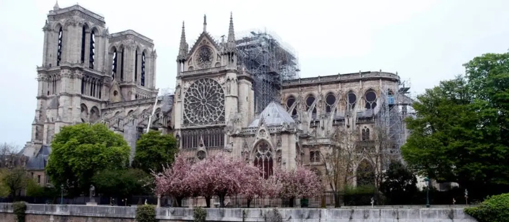
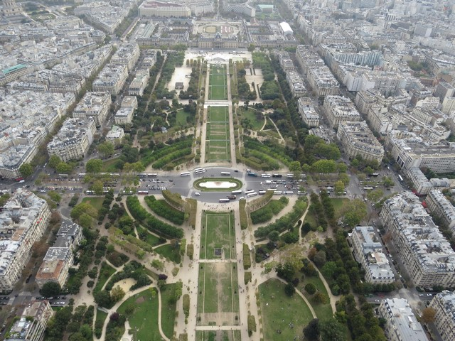
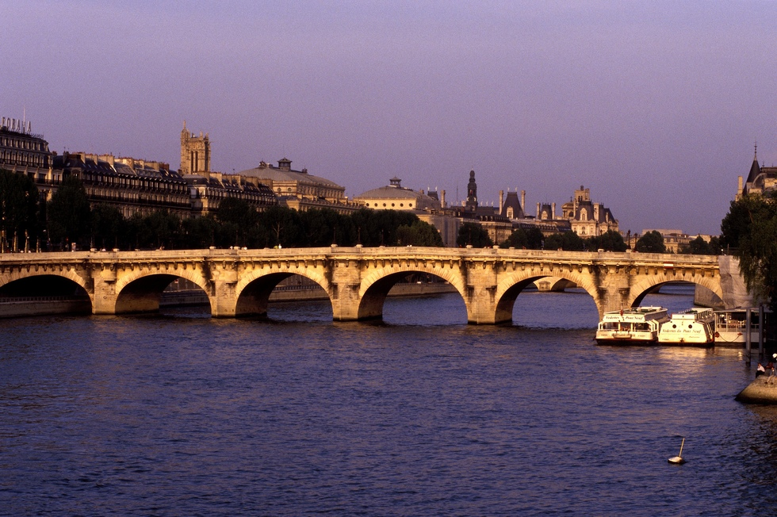
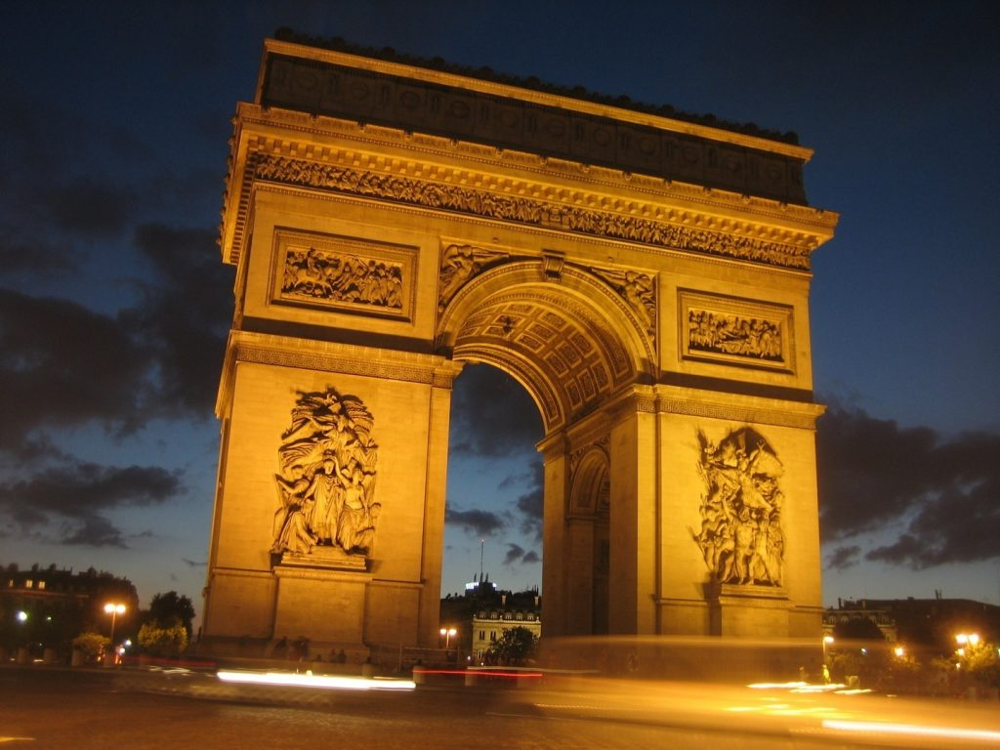
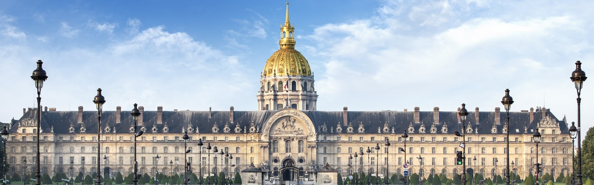
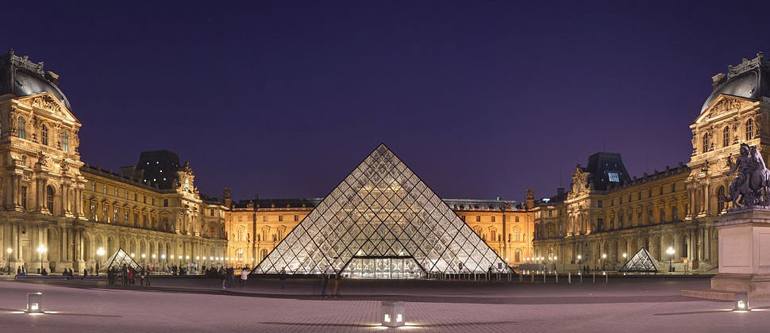
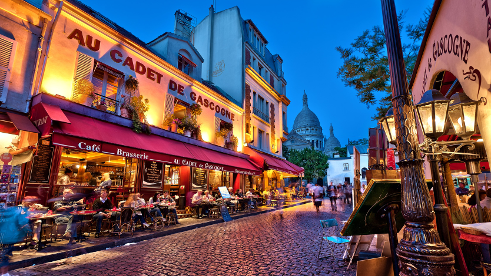

Una ciudad para soñar
La Catedral de Notre Dame es una de las catedrales góticas más antiguas del mundo de la que se terminó su construcción el año 1272. Su interior es espectacular con grandes ventanales y una gran altura, que hacen de este lugar una de las visitas imprescindibles de la ciudad.
Para subir se forman grandes colas, la subida es un poco dura con 387 escalones, pero las vistas y las fotos que te llevarás como recuerdo, merecen la pena todo el esfuerzo.
| Horario | |
|---|---|
| Lunes a viernes | 08:00-18:45 |
| Sábados y domingos | 08:00-19:15 |
| visitas guiadas gratuitas en español | sábados a las 14:30 |
| Horario | |
|---|---|
| Abril-septiembre | 10:00-18:30 |
| los sábados de julio y agosto | 23:00 |
| Octubre-marzo | 10:00-17:30 |
| Precio | |
|---|---|
| Catedral | gratis |
| Torres | 10 € |
| Tesoro | 3 € |
| Cripta | 8 € |
La Torre Eiffel fue creada para la Exposición Universal de París del año 1889 y aunque en un principio no gustó a los parisinos, a lo largo de los años se ha convertido en el icono de la ciudad. Sus 1.665 escalones hacen recomendable la subida en ascensor, aunque escojas la forma que escojas, lo que no puedes perderte son las vistas increíbles de la ciudad desde arriba.
Además en la torre se encuentra uno de los mejores restaurantes de París «Le 58 Tour Eiffel«, donde reservar una cena romántica, puede ser memorable y un momento inolvidable.
Las mejores vistas que puedes tener de la Torre Eiffel son desde la plaza Trocadero, aunque también tendrás muy buena perspectiva desde el Parque del Campo de Marte o desde la Rue de l´Université, desde donde la podrás contemplar entre edificios.
En los ascensores se forman largas colas,pero por las escaleras prácticamente no tendrás que esperar.
| Horario: | |
|---|---|
| de junio a septiembre | 09:00-00:45 |
| Último ascensor | 23:00 |
| Resto del año | 09:30-23:45 |
| Último ascensor | 22:30 |
| Entrada con acceso hasta el último piso | |
|---|---|
| Adultos | 25 € |
| Jóvenes (12/24 años) | 12,5 € |
| Niños (4/11 años) con movilidad reducida | 6,30 € |
| Niños menores de 4 años | gratis |
| Entrada con acceso hasta el segundo piso | |
|---|---|
| Adultos | 16 € |
| Jóvenes (12/24 años) | 8 € |
| Niños (4/11 años) con movilidad reducida | 4 € |
| Niños menores de 4 años | gratis |
Pasear al atardecer desde la Catedral de Notre Dame hasta la Torre Eiffel bordeando el Sena es uno de los paseos más románticos del mundo y uno de los mejores consejos para viajar a París.
Durante el trayecto cruzarás varios de los puentes más bonitos de la ciudad como el Puente Nuevo, el Puente de las Almas o el Puente de Alejandro III. Le Pont Neuf es el puente más antiguo y nuestro preferido, que une la Île de la Cité con la ciudad y nos regala unas vistas únicas de los alrededores.
Una buena opción para conocer esta zona es también recorrer el Sena en barco al anochecer y ver París iluminada desde otra perspectiva. Una experiencia única que seguro tardarás en olvidar,si es que consigues olvidarla.
El Arco de Triunfo es el más famoso del mundo y uno de los lugares imprescindibles que visitar en París. Fue construido por Napoleón para recordar su victoria en la batalla de Austerlitz. El monumento es inmenso y sus 50 metros de alto lo convierten en uno de los mejores miradores de París. Además está situado en una de las rotondas más grandes del mundo que únicamente se puede cruzar a través de un paso subterráneo. Además de la visita y la subida a la parte alta, en la base del Arco encontrarás la Tumba del Soldado Desconocido, otro de los lugares que no debes perderte.
| Horario | |
|---|---|
| abril-septiembre | 10:00-23:00 |
| octubre-marzo | 10:00-22:30 |
| Precios | |
|---|---|
| Adultos | 12 € |
| Reducida | 9 € |
Es uno de los edificios históricos más icónicos de París: además del albergar el mausoleo con los restos del emperador Napoleón, el complejo del Hôtel des Invalides acoge varios museos y está plagado de referencias históricas al pasado militar francés.
¿Qué tiene el Palacio Nacional de los Inválidos que atrae a diario a centenares de turistas? Sin duda, lo más destacado es el mausoleo de Napoleón Bonaparte, uno de los personajes históricos de mayor transcendencia para la historia de Francia (y de Europa).
| Horario | |
|---|---|
| Todos los días | 07:30-19:00 |
| Martes de abril a septiembre | hasta las 21:00 |
| Precio | |
|---|---|
| Adultos | 12 € |
| Reducida (todos los visitantes a partir de las 17:00) | 10 € |
| Menores de 18 años | gratis |
| Menores de 26 años de la UE | |
| Movilidad reducida | |
| Militares franceses o extranjeros | |
| Audioguías | |
|---|---|
| Todo el mundo | 6 € |
| Menores de 26 años | 4 € |
El Louvre es uno de los mejores lugares que visitar en París, además de ser el museo más visitado del mundo. La visita puede durar mas de unas horas para verlo e incluso más hasta más de un día para los amantes del arte. Algunas de sus mejores obras son la famosa Gioconda de Leonardo da Vinci, la Venus de Milo o el Escriba Sentado del antiguo Egipto.
| Horario | |
|---|---|
| Lunes a domingo | 09:00-18:00 |
| Primer miércoles cada mes | hasta las 21:45 |
| Primer viernes cada mes | |
| Primer sábado cada mes | |
| Precio | |
|---|---|
| Adultos | 15 € |
| Menores de 18 años | gratis |
| jóvenes 18-25 de la UE | |
| menores de 26 años (partir de las 18:00) | |
| movilidad reducida (y un acompañante) | |
Si quieres salir por la noche a cenar o tomar una copa no puedes dejar de ir al Barrio Latino. Sus calles estrechas llenas de restaurantes con terrazas y carteles mostrando precios mucho más baratos que el resto de la ciudad, serán una magnífica alternativa. En el barrio además de encontrar mucho ambiente puedes dedicar un tiempo a ver la plaza y la fuente de Saint Michel, entrar en la preciosa librería de Shakespeare & Co, o visitar el Panteón.
Si te preguntas de dónde viene su nombre la explicación es sencilla y está ligada a una famosa universidad fundada a mediados del siglo XIII cuyo nombre seguro que te suena: la Universidad de la Sorbona, cuyas instalaciones continúan ubicadas en el barrio hoy en día. Antiguamente, por la concentración de estudiantes y profesores, era muy habitual escuchar hablar en latín en el barrio.
Con estos antecedentes era inevitable que el barrio latino se convirtiera de los barrios más animados de París, donde se concentran numerosos cines, pequeñas librerías de viejo, salas de conciertos y teatros muy conocidos, como el imprescindible Théâtre de l’Odéon, donde se estrenó Las Bodas de Fígaro, de Mozart.
Buena comida francesa a precios medios. Se trata de un restaurante pequeño cerca del Panteón, con carnes muy ricas y buenas tablas de quesos franceses.
Donde sirven hamburguesas gourmet a buen precio y de calidad.
También sirven hamburguesas, baratas, ricas y acompañadas de buena música.
El sitio mas económico donde comer, aquí preparan unos de los mejores crepes de París. Son baratos y muy sabrosos, con todo tipo de ingredientes.
Para los golosos...Bollería de calidad, buenos desayunos y meriendas a precios razonables.